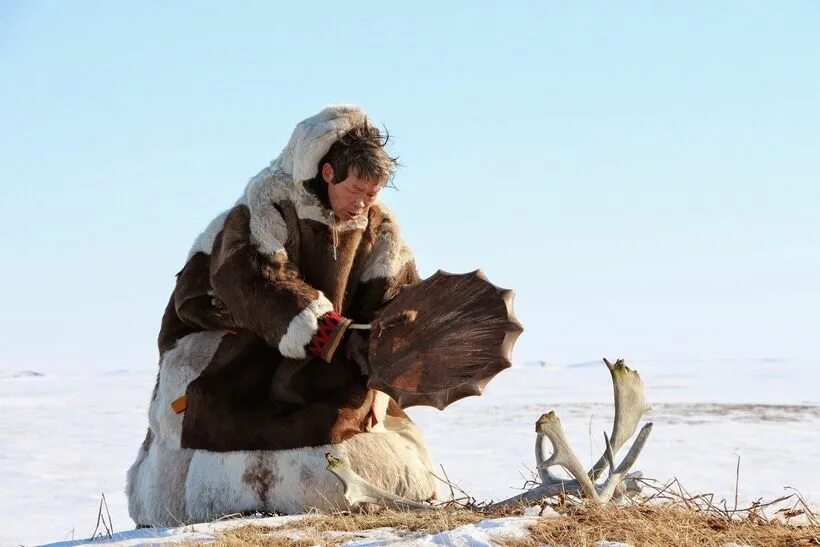

Религия ненцев
Традиционная религия ненцев – анимистическая, основанная на поклонении духам природы: духам животных, рек и гор. У ненцев есть особые ритуалы, посвящённые охоте и празднику получения шкур.
В последние десятилетия наблюдается влияние христианства, что привело к синкретизму в верованиях.
